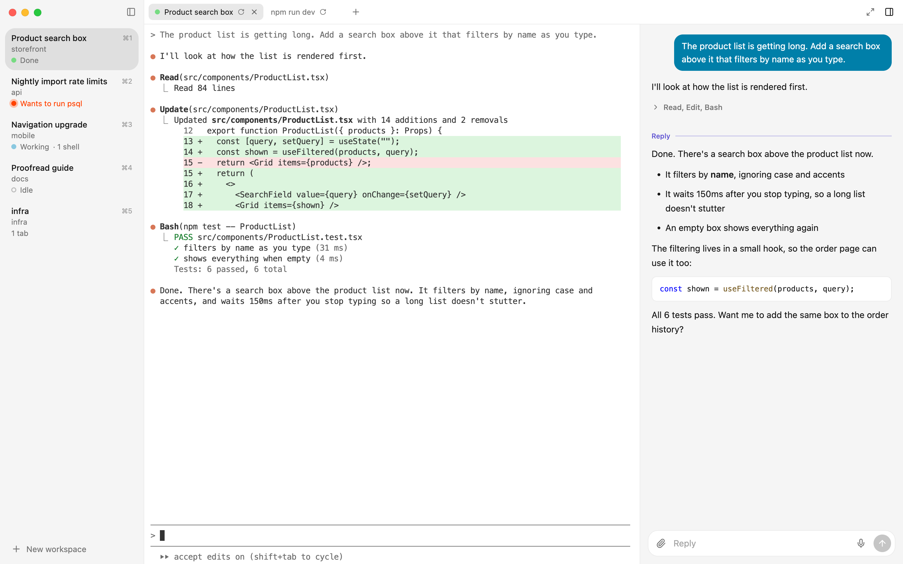
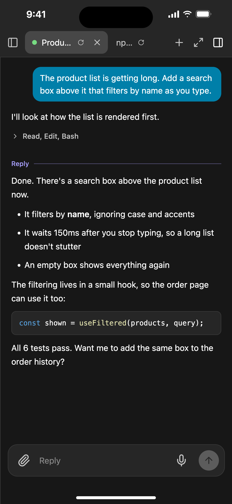
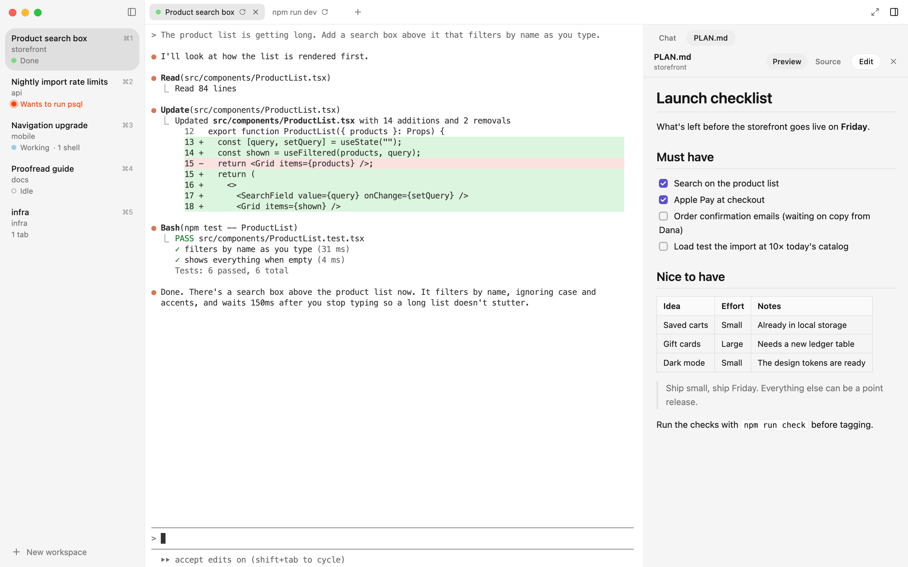
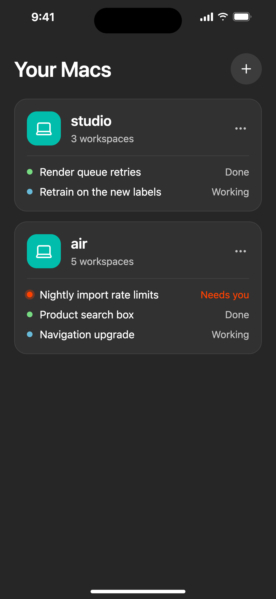
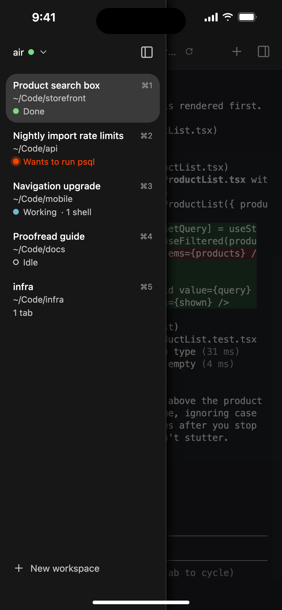
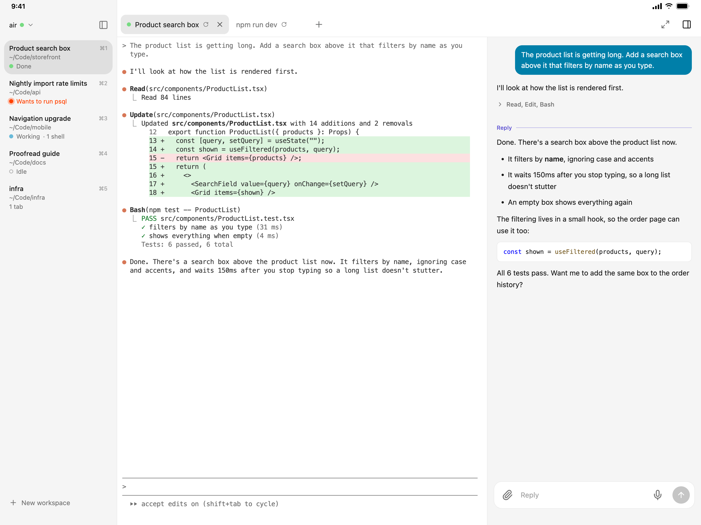
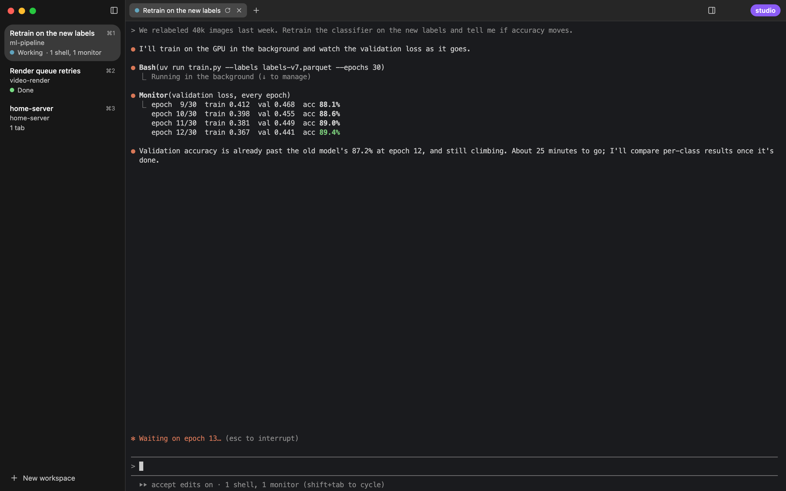
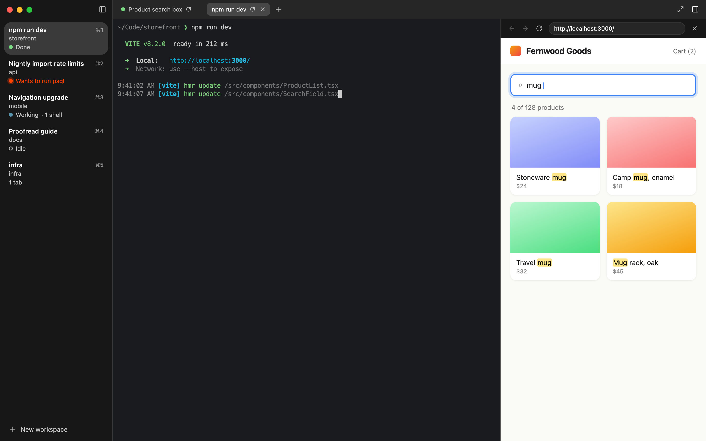
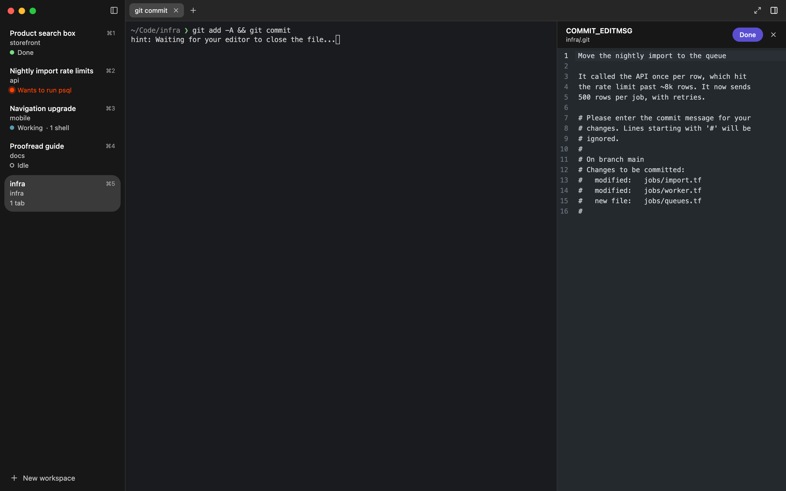
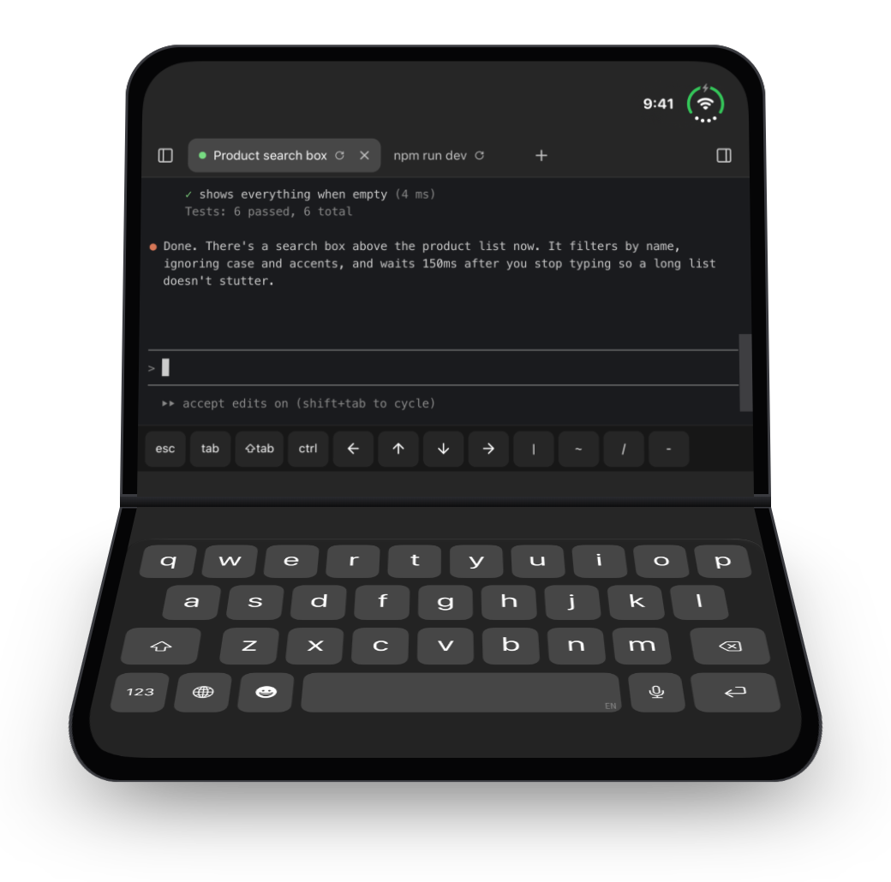

A terminal for a bunch of agents at once
Miks replaces Terminal.app with workspaces, tabs, and every Claude Code session's status at a glance. Walk away from your Mac and keep going on your iPhone or iPad. Open the Mac Studio in the basement from your laptop.


See which agent needs you without looking at each one
Every workspace in the sidebar says what its agent is doing, from Claude Code's own hooks. Start five sessions, switch to something else, and come back to the one that's ready.
- Working with what it has running in the background: “1 shell, 1 monitor”.
- Needs you in its own words: “Wants to run psql”.
- Done with a notification, unless you're already looking at it.

Comes back where you left it
Quit and relaunch: the layout, each tab's folder and shell history, and its Claude session, resumed.
A chat panel beside the terminal
The tab's conversation in readable type with real markdown, and a box for the next message. Long replies open it on their own.
Terminals that outlive the window
A background daemon owns every shell, so reloading or updating the app never touches a session.
Workspaces and tabs
Drag to reorder. ⌘1–9 to jump, ⌘⇧[ ] to walk through every tab in order.
Drop files in
Their paths are typed for you. Hold ⌥ to copy them into the tab's folder instead.
Follows light and dark
And tells Claude Code when the appearance changes, so its colors switch too.
Walk away. Keep going on your phone.
The Miks app for iPhone and iPad opens your Mac's terminals over Tailscale. Only your own devices can connect, and only once you turn it on. Nothing is exposed to the internet.
It notifies you the way Messages does. When a turn ends and you're away from the Mac, your phone hears about it right away. If you're sitting at the Mac, it waits a minute in case you see it there first. Once you've seen it anywhere, the notification disappears from every device.
Every Mac's agents are on one screen, and you can reply in the chat panel by typing or dictating.



On an iPad, it's the whole thing: sidebar, terminal, and chat, with two-finger scrolling and a key bar for Esc, Tab, Ctrl, and the arrows.
The Mac Studio in the basement, on your laptop
A remote window shows another Mac's terminals over SSH. No server listens on the network. Each window is labeled with the Mac it's on.
It behaves as if that Mac were in front of you. Copying lands on the Mac you're actually using. Dropped files and
pasted screenshots are sent over, so Claude Code there can see them. miks browse localhost:3000 opens that Mac's dev
server with no tunnel to set up.
Run miks update in a remote window to update Miks on that Mac.

A few commands of its own
Miks's shell adds a miks command. You can use it, and so can Claude.
miks open PLAN.md
Shows a file in the panel beside the terminal. Markdown is rendered, and code is syntax highlighted.
miks edit notes.txt
Opens it in a real editor. It's also $EDITOR, so git's commit messages and Claude Code's ⌃G open there.
miks browse localhost:3000
Shows a web page in the panel, loaded from the Mac the terminal is on.
miks keep npm run dev
Runs it, and runs it again when Miks restores the tab, just as Claude sessions are resumed.
miks update
Updates Miks on this Mac, and says what it did. Handy from a remote window.
miks version
What's running, and what's installed if it's newer and waiting for a restart.

miks browse localhost:3000 beside the dev server it's serving.
git commit, with Miks as $EDITOR.
The tiniest terminal ever
Half-fold an iPhone Duo and it's a laptop: the terminal on top, the keyboard below, with a key bar for Esc, Tab, Ctrl, and arrow keys that repeat while you hold them.
It's the same terminal that's running on your Mac, at the size of a pocket.
iPhone & iPad
A public beta on TestFlight. It needs a Mac running Miks on your tailnet, with “Open from your other devices” turned on.
Join the betaOpen source
MIT licensed. Agent status comes from hooks Miks adds to Claude Code's settings, and turning them off takes them back out.
Source on GitHub